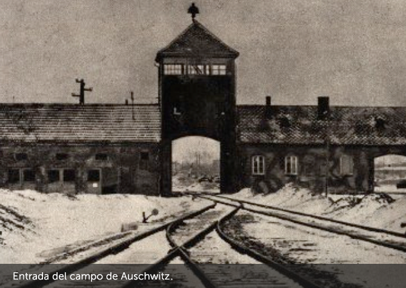

Hana Brady




Deportación hacia Auschwitz.
Cuantas más personas llegaban a Terezín, otras tantas salían. Hombres y mujeres eran apiñados en vagones de carga y enviados al Este, hacia un destino desconocido. Los rumores de brutalidad y asesinatos en masa empezaron a circular abiertamente. Cuando las personas hablaban de ello, Hana se tapaba los oídos. En setiembre de 1944, deportaron a George y cuatro semanas después le tocó el turno a Hana. El tren viajó durante un día y una noche. No había ni comida ni agua, no había baños. Su garganta estaba reseca, le dolían los huesos y tenía punzadas en el estómago.
El 23 de octubre de 1944 llegaron a Auschwitz. A través de un portón de hierro y bajo la mirada vigilante de perros atemorizantes y hombres uniformados, Hana y sus compañeras marcharon. Recibieron la orden de entrar en un edificio. La puerta se cerró detrás de ellas con gran violencia.
El 23 de octubre de 1944 llegaron a Auschwitz. A través de un portón de hierro y bajo la mirada vigilante de perros atemorizantes y hombres uniformados, Hana y sus compañeras marcharon. Recibieron la orden de entrar en un edificio. La puerta se cerró detrás de ellas con gran violencia.